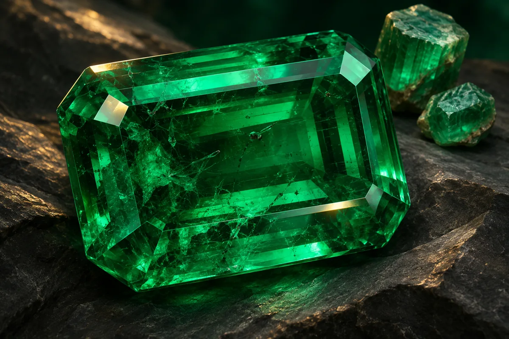

01
Reconocer la esmeralda colombiana
Identificar las características generales que distinguen a las esmeraldas colombianas.
Estudio de las características, identificación, origen y particularidades de las esmeraldas colombianas como material de especial importancia dentro de la gemología.
Registro personal de lectura en este navegador; no equivale a una calificación ni se sincroniza con Classroom.

El Módulo 07 está dedicado al estudio de las esmeraldas colombianas, uno de los materiales gemológicos de mayor reconocimiento internacional asociados con Colombia.
El estudio de esta gema permite integrar los conocimientos adquiridos en los módulos anteriores, especialmente los relacionados con propiedades físicas y ópticas, utilización de instrumentos e identificación gemológica.
Durante el módulo se abordarán elementos relacionados con las características de las esmeraldas colombianas, su identificación y los aspectos que deben considerarse durante su análisis.
La esmeralda colombiana constituye un tema fundamental para comprender la riqueza y relevancia de la gemología desarrollada alrededor de este material.
Al finalizar el módulo, el estudiante podrá reconocer características relevantes de las esmeraldas colombianas y relacionarlas con los procedimientos básicos de análisis gemológico.
Identificar las características generales que distinguen a las esmeraldas colombianas.
Relacionar sus propiedades físicas y ópticas con el proceso de identificación.
Comprender la importancia de las características internas y externas durante el análisis.
Aplicar conocimientos adquiridos en módulos anteriores al análisis de la esmeralda.
El contenido se organiza en diferentes aspectos relacionados con el conocimiento y análisis de las esmeraldas colombianas.
Características generales y relevancia de la esmeralda colombiana.
Propiedades y características relevantes para el análisis de la gema.
Observación y análisis de las características relacionadas con el color y apariencia.
Importancia de las características internas en el estudio gemológico.
Aplicación de observación e instrumental gemológico para el análisis.
Relación entre las características de la gema y los criterios de valoración estudiados previamente.
La observación de una esmeralda requiere considerar diferentes características. Ningún criterio visual aislado debe utilizarse como único elemento para establecer una identificación definitiva.
Análisis de la tonalidad, saturación y distribución del color de la gema.
Observación de características internas que pueden aportar información durante el análisis.
Evaluación de las características relacionadas con el paso de la luz a través del material.
Observación de las características superficiales y ópticas de la gema.
El proceso de identificación debe integrar observación, medición y análisis mediante instrumentos apropiados.
Examinar visualmente la gema y registrar sus características generales.
Examinar características internas y externas mediante herramientas de magnificación.
Relacionar los resultados obtenidos con las propiedades conocidas del material.
Integrar la información obtenida para establecer conclusiones gemológicas.
Conceptos esenciales, ejemplo aplicado, actividad de estudio, preguntas con respuestas y referencias de consulta.
Material académico correspondiente al Módulo 07 del Curso de Gemología.
El material académico debe configurarse en Google Drive con permisos de visualización para los estudiantes.
El estudiante deberá analizar un caso de estudio o material visual suministrado por el curso, registrar las características observadas y relacionarlas con los conceptos estudiados sobre esmeraldas colombianas.
Consultar actividades en Classroom ↗Una vez revisado el material y desarrollada la actividad, el estudiante podrá realizar la evaluación correspondiente al Módulo 07.
La lectura puede marcarse al terminar la consulta del contenido. Esta marca personal no sustituye las actividades ni la evaluación docente.